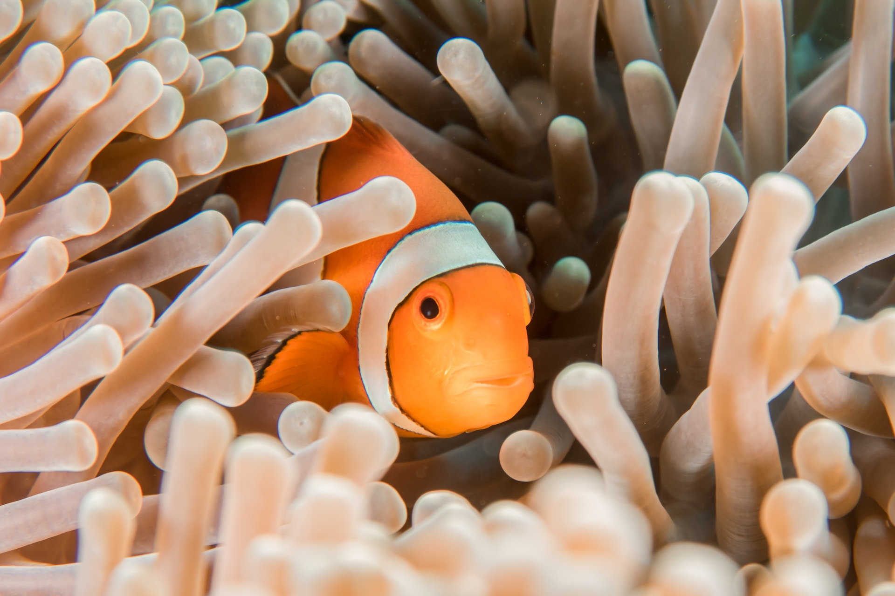
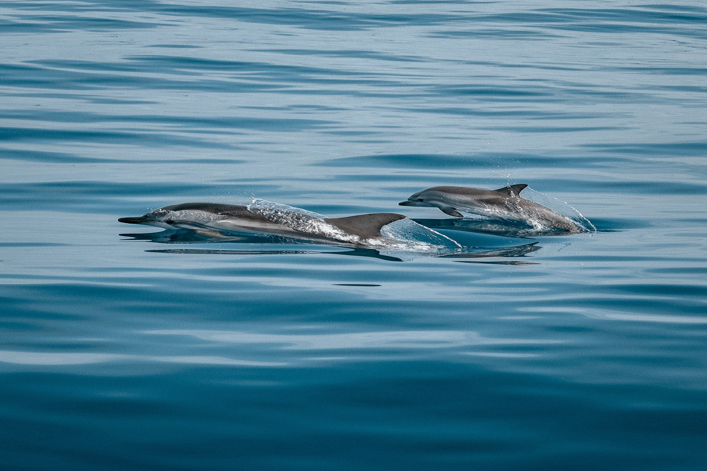
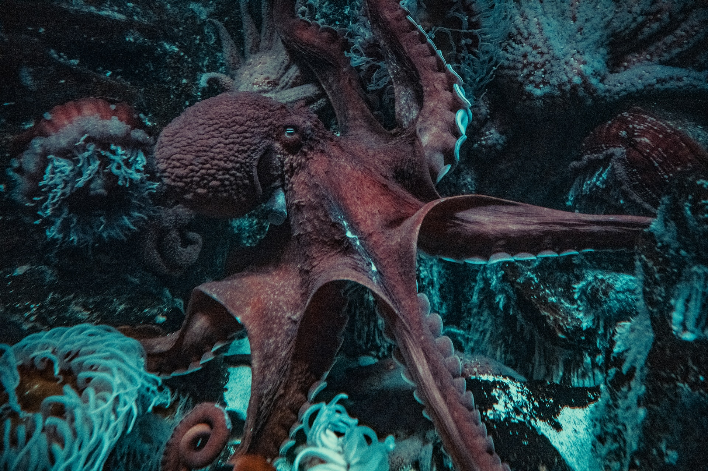

Ikan Nemo

Ikan Nemo Selain dikenal dengan nama ikan giru dan ikan badut,
ikan ini juga disebut sebagai anemon fish. Sebab, ikan nemo seringkali
terlihat hidup diantara anemon laut. Tubuh nemo memiliki warna dasar
oranye cerah dengan tiga belang warna putih. Selain itu, di bagian
kepala, tengah tubuh, dan pangkal ekornya terdapat sedikit warna
hitam. Bagian tulang di bawah mata tidak berduri panjang dan cenderung
bergerigi pendek. Ikan ini juga mempunyai jari-jari keras yang tidak
sama panjang pada bagian sirip punggung. Selain itu, terdapat 11
jari-jari di bagian sirip dorsal dan 17 jari-jari di bagian pectoral.
Secara umum, ikan nemo bisa tumbuh hingga mencapai panjang 15 cm di
alam bebas. Rata-rata tubuh ikan nemo berukuran antara 6 hingga 18 cm
dimana setiap warna tubuhnya tergantung dari spesies masing-masing.
Ikan yang sering dimanfaatkan sebagai ikan hias ini biasanya mendiami
wilayah perairan Samudera Hindia dan Samudera Pasifik, termasuk
wilayah perairan Indonesia.(https://rimbakita.com/ikan-nemo/)
Lumba-lumba

Lumba - lumba adalah mamalia laut yang sangat cerdas, selain
itu sistem alamiah yang melengkapi tubuhnya sangat kompleks. Sehingga
banyak teknologi yang terinspirasi dari lumba-lumba. Salah satu contoh
adalah kulit lumba-lumba yang mampu memperkecil gesekan dengan air,
sehingga lumba-lumba dapat berenang dengan sedikit hambatan air. Hal
ini yang digunakan para perenang untuk merancang baju renang yang
mirip kulit lumba-lumba. Lumba-lumba memiliki sebuah sistem yang
digunakan untuk berkomunikasi dan menerima rangsang yang dinamakan
sistem sonar, sistem ini dapat menghindari benda-benda yang ada di
depan lumba-lumba, sehingga terhindar dari benturan. Teknologi ini
kemudian diterapkan dalam pembuatan radar kapal selam. Lumba-lumba
adalah binatang menyusui karena lumba lumba adalah mamalia. Mereka
hidup di laut dan sungai di seluruh dunia. Lumba-lumba adalah kerabat
paus dan pesut. Ada lebih dari 40 jenis
lumba-lumba.(https://id.wikipedia.org/wiki/Lumba-lumba)
Gurita

Gurita adalah hewan moluska dari kelas Cephalopoda (kaki hewan
terletak di kepala), dengan terumbu karang di samudra sebagai habitat
utama. Gurita terdiri dari 289 spesies yang mencakup sepertiga dari
total spesies kelas Cephalopoda. Gurita dalam bahasa Inggris disebut
Octopus (Yunani: Ὀκτάπους, delapan kaki) yang sering hanya mengacu
pada hewan dari genus Octopus. Gurita memiliki 8 lengan (bukan
tentakel) dengan alat pengisap berupa bulatan-bulatan cekung pada
lengan yang digunakan untuk bergerak di dasar laut dan menangkap
mangsa. Lengan gurita merupakan struktur hidrostat muskuler yang
hampir seluruhnya terdiri dari lapisan otot tanpa tulang atau tulang
rangka luar. Tidak seperti hewan Cephalopoda lainnya, sebagian besar
gurita dari subordo Incirrata mempunyai tubuh yang terdiri dari otot
dan tanpa tulang rangka dalam. Gurita tidak memiliki cangkang sebagai
pelindung di bagian luar seperti halnya Nautilus dan tidak memiliki
cangkang dalam atau tulang seperti sotong dan cumi-cumi. Paruh adalah
bagian terkeras dari tubuh gurita yang digunakan sebagai rahang untuk
membunuh mangsa dan menggigitnya menjadi bagian-bagian
kecil.(https://id.wikipedia.org/wiki/Gurita)